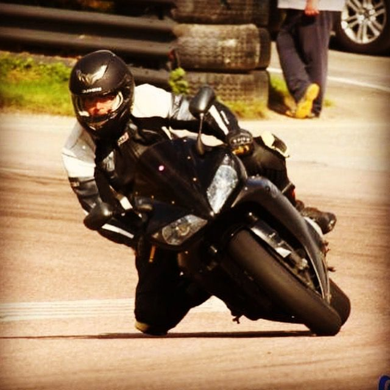

Two bikes. Two personalities. One addiction.
Superbike
The S1000RR is pure precision engineering. BMW took everything they knew about making things go fast and poured it into an inline-four that screams to the redline. It's the kind of bike that makes you a better rider — or humbles you trying. Razor-sharp on turn-in, relentless on the straights, and packed with enough electronics to keep things (mostly) civilised.
Whether it's a trackday at Brands Hatch or a Sunday blast through the Kent lanes, the RR delivers that addictive cocktail of fear and euphoria that keeps you coming back.
Hyper Naked
KTM call it "The Beast" and that's not marketing fluff — it's a genuine warning label. The 1290 Super Duke is a V-twin muscle bike with the manners of a cage fighter. Massive torque from idle, a chassis that begs to be thrown into corners, and a presence on the road that makes everything else feel apologetic.
It's the everyday hooligan. Commuting? Entertaining. Country roads? Devastating. Traffic? That V-twin rumble makes even the boring bits feel good. It's the bike that makes you take the long way home every single time.
Because one bike can't do everything — and why would you want it to? The S1000RR is for those days when you want surgical precision and to chase lap times. The Super Duke is for when you want raw character, torque, and to feel every bit of the road beneath you.
One's a scalpel. The other's a sledgehammer. Both are addictive. Both get ridden hard. The perfect two-bike garage.